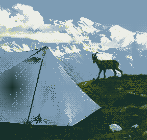
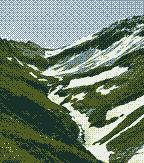
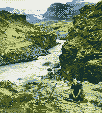
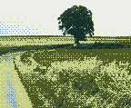

1 Purpose
I enjoy building tools that help people sleep better.a
Right now that means AI (or should I say, SI?) agents for the go‑to‑market team at Qonto. Before that it meant data analysis and automation in corporate sustainability at Dassault Systèmes. Even before that, a humanities degree and a lot of questions about how societies work.
aBetween the lanes of humanities, sustainability and technology. Never in the middle of one.
Purpose aside, I love a breeze out in nature, the click of a keyboard late at night, and a slightly unrealistic dream of un monde sain.b
bUn monde sain: a healthy world. Sain and sane share a Latin root.
2 Things I've made
- 2.1brilliant-CV. An open-source CV template for Typst. 844 stars, 27 contributors, and a test suite that fails if a margin moves half a millimetre.
- 2.2A multi-agent medical companion. Built as tech lead at a Google Cloud hackathon in 2024: it gives health advice, suggests a diagnosis and books the appointment. Second place.
- 2.3Two master's theses, one each side of the lane. Urban mining and repairability under the circular economy (Paris 1 Panthéon-Sorbonne, 2023); then language models on sustainability tasks, with retrieval and knowledge graphs (Albert School × Mines Paris – PSL, 2025).
- 2.4Homelab. One small server, a dozen services, zero open ports.
3 Specifications
| Parameter | Value | Unit | Conditions |
|---|---|---|---|
| Operating temperature | −1 to +21 | °C | 21 rides of 20 km or more; median 10 °C |
| Single-day range | 200 | km | Self-supported, gravel, small roads |
| Languages | 5 | — | Teochew, Cantonese, Mandarin, French (C2), English |
| Open ports | 0 | — | Homelab, all ingress via tunnel |
| Page weight | 47.1 | kB | This page, its fonts and images, compressed, measured at build |
| Fuel | 1 to 5 | coffees/day | Peaks before a Salesforce deployment |
| Song loop, max | 14 | plays | One Wu Bai song, earphones dead, 70 km from home |
| Exit status | 0 | — | Unless invoked with npm |
4 Terrain
Gravel, mostly self-supported and mostly on small roads. Multi-day hikes from the Dolomites to the GR441 through the Auvergne volcanoes. Next: the Iceland Divide, by bike.
4.1 Tour du Mont Blanc
June 2025, solo. 8 days on foot, 149 km, +7,837 m. Profile on the cover.


4.2 Laugavegur, Iceland
17–19 July 2025. 3 days on foot from Landmannalaugar to Þórsmörk, 58 km, +1,810 m.

4.3 Pommes de Terre Salées
24 May 2025. A 200 km gravel brevet from the edge of Paris to the sea at Mers-les-Bains, 205 km, +2,076 m, 11 h 20 min in one day.

5 Colophon
This page is one HTML file, two font subsets, four dithered photographs and no scripts. Running text is set in your system's own serif. Labels are set in Barlow Condensed, and the name in Noto Serif SC cut down to its three characters, both under the SIL Open Font License. Fig. 1 is drawn from my watch's records of the walk, with elevation from a public terrain model. Every number in Fig. 6 is measured when the page is built.
Borrowed, with thanks: dithered photographs and a page that admits its own weight, from Low-tech Magazine's solar edition; the byte budget, from Maciej Cegłowski's talk The Website Obesity Crisis; notes in the margin, from gwern.net; and the wish for a page that lasts, from the permacomputing principles.
6 Contact
bonjour@yunan.dev.
Also on GitHub and LinkedIn.
Printed 2026-10-11 from the source. The counts in 2.1 are read from GitHub each time the page is built, at least once a week. The same manual reads in a terminal: curl -sO https://yunan.dev/yunan.1 && man ./yunan.1.